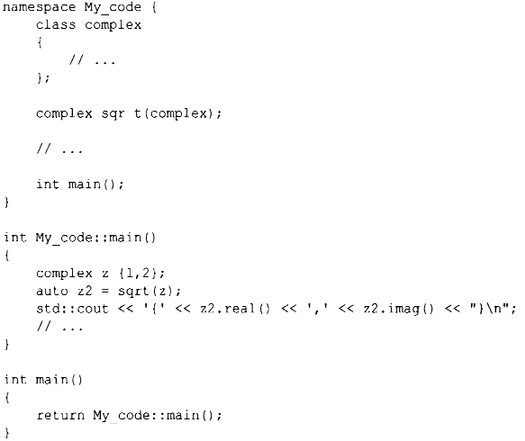
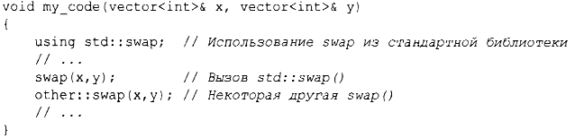
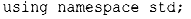

⇐3.3 Модули (С++20) 3.5 Обработка ошибок⇒
В дополнение к функциям (§ 1.3), классам (§2.3) и перечислениям (§2.5) С++ предлагает пространства имен в качестве механизма для выражения того факта, что некоторые объявления связаны одно с другим и что их имена не должны конфликтовать с другими именами. Например, я могу захотеть поэкспериментировать с собственным типом комплексных чисел (§4.2.1, § 14.4 ):
Помещая свой код в пространство имен Му code, я гарантирую, что мои имена не конфликтуют с именами стандартной библиотеки (в пространстве имен std) (§3.4). Эта предосторожность разумна, поскольку стандартная библиотека обеспечивает поддержку арифметики комплексных чисел (§4.2.1, § 14.4).
Простейший способ получить доступ к имени в другом пространстве имен - квалифицировать его с помощью имени пространства имен (например, std:: cout или Му code: :main). "Настоящая" функция main () определена в глобальном пространстве имен, т.е. не является локальной для некоторого пространства имен, класса или функции.
Если многократная квалификация имени становится утомительной или отвлекающей, можно ввести имя в область видимости с помощью using-объявления:
Объявление using делает имя из пространства имен используемым так же, как если бы оно было объявлено в области видимости, в которой к нему выполняется обращение. Действие директивы using std::swap таково, как если бы функция swap была объявлена в my_code( ) .
Для получения доступа ко всем именам в пространстве имен стандартной библиотеки можно использовать следующую директиву:
Директива using делает неквалифицированные имена из именованного пространства имен доступными из области видимости, в которую мы поместили эту директиву. Поэтому после директивы using для std мы можем писать просто cout, а не std: : cout. Используя директиву using, мы теряем способность выборочно использовать имена из указанного пространства имен, поэтому ее следует использовать осторожно, как правило, для библиотеки, которая широко применяется в приложении (например, std), или при переделке приложения, которое не использовало пространства имен.
Пространства имен в основном используются для организации более крупных программных компонентов, таких как библиотеки. Они упрощают составление программы из отдельно разработанных частей.